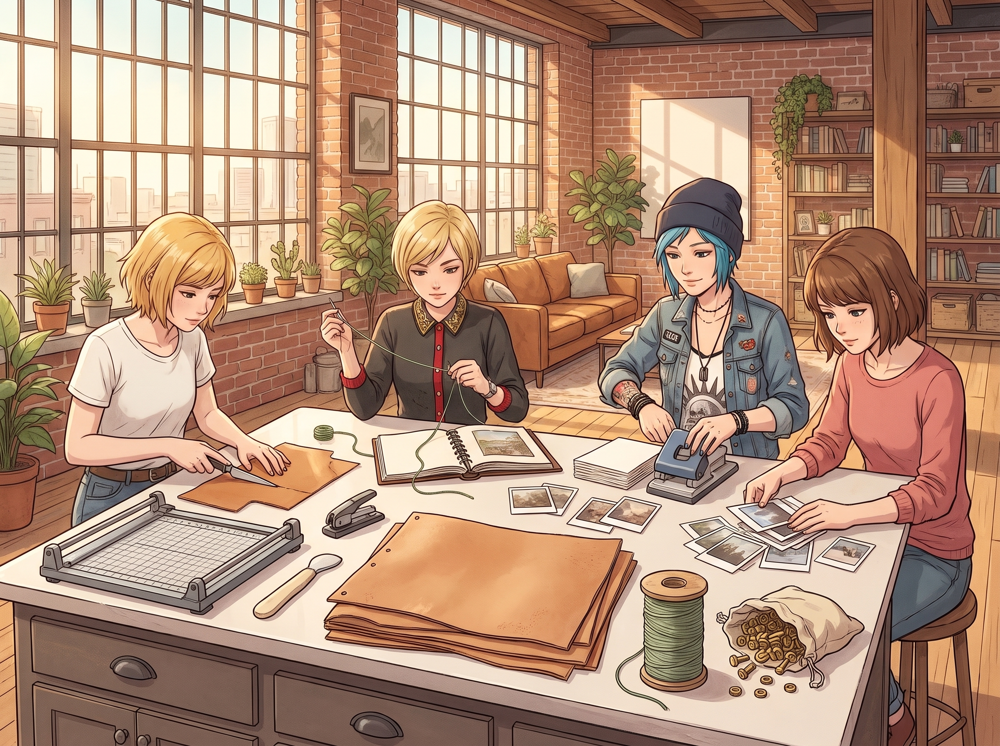

皮革與黃銅裝幀

午後兩點，天台收拾妥當後，客廳長桌迅速變成了復古裝幀工坊。
為了把這次展覽的試印樣張、暗房裁切下來的厚磅棉紙邊角料，以及四人在展覽前後拍下的所有拍立得完整留存，四人決定動手製作四本純手工裝訂的《時間殘留物·限量典藏紀念冊》。
桌上整齊碼放著工具與材料：裁紙刀、骨質折痕棒、打孔錐、幾塊從舊皮衣上裁剪下來的原色植鞣牛皮、一大包泛著暗金光澤的實心黃銅開口螺栓釘，以及 Kate 用迷迭香煮水染成鼠尾草綠的加厚亞麻線。
四個人圍坐長桌兩側，默契地開啟了四人工位流水線。
一、封面裁切與皮革塑形
Chloe 戴著防割手套，手裡握著鋒利的手術刀級裁皮刀，在切割墊上俐落地下刀，將厚實的硬質牛皮裁切成略大於內頁的方正封面。
她拿起那把黑檀木雕刻刀，在每本皮革封面的右下角，用深壓紋手工烙印上一個極其微縮的齒輪骷髏與四葉草暗紋，邊緣用砂紙打磨出細膩的圓弧倒角。
「這皮子厚度足足有 2.5 毫米，」Chloe 拍了拍桌面，一臉得意，「就算從皮卡後斗甩出去，裡面的照片也蹭不到半點灰。」
二、內頁排版與拼貼
Max 戴著那副黑框眼鏡，手裡拿著無酸雙面膠與鑷子，將一張張帶著天然毛邊的棉紙樣張拼貼成冊。
她將 Chloe 打磨零件的火星抓拍、Kate 在晨光中托起迷迭香的側影、Victoria 審查展位時抱胸蹙眉的特寫，以及昨晚天台慶功宴上四人碰杯的拍立得，按照時間流動的節奏交叉排列。每一頁的留白處，都用鉛筆手寫著拍攝當天的精確曝光參數與一句簡短的現場碎碎念。
三、壓槽與植物押花封存
Kate 負責最精細的隔頁美化。她用骨質折痕棒小心翼翼地在每張卡紙的裝訂線處壓出平整的緩衝槽，確保翻頁時不會產生折痕。
在每本紀念冊的扉頁，Kate 都夾入了一小片經過壓榨脫水、依舊保持著淡綠色的天台新鮮迷迭香葉與一小朵乾燥薰衣草，覆蓋上透明的硫酸防潮紙。「這樣每次翻開第一頁，都能聞到天台夏天的味道。」Kate 輕聲笑道。
四、打孔、鉚接與品質把控
Victoria 換上了一件寬鬆的灰色羊絨衫，手裡拿著專業的轉盤打孔鉗，精準地在皮革封面與厚厚一疊內頁的左側打下三個等距的圓孔。
她將實心黃銅螺栓釘穿入孔洞，用黃銅一字螺絲刀慢慢旋緊，直到整本紀念冊達到最嚴密的阻尼咬合感。
最後，Victoria 拿出一支金色油漆筆，在每本紀念冊內頁最後的版權頁上，用行雲流水的花體字優雅地簽下編號：
「Edition 1 of 4 / Private Archive / Portland Loft」
依序簽到第四本，她端詳著整齊擺在桌面上的四本皮質小冊子，嘴角勾起滿意的淺笑：「裝幀水準勉強達到了先鋒獨立出版社的限量收藏標準。這四本書如果拿去西雅圖的獨立書展，每本至少能標價兩百美元。」
「標價兩百？想都別想，這可是無價之寶。」Chloe 伸手抓起屬於自己的那本「01/04」，指尖撫過沉甸甸的黃銅螺栓與帶有迷迭香氣息的皮革，眼神裡滿是藏不住的珍視。
午後的金色陽光穿透落地窗，在地板上拉出長長的光影。
四人各自捧著一本剛裝訂完畢、帶著皮革與草本香氣的紀念冊，靠在沙發上輕輕翻動著紙頁。清脆的翻書聲與窗外的微風交織在一起，那些曾經散落在車庫火星、暗房藥水、天台水霧與展廳掌聲中的時光碎片，在此刻被黃銅與皮革緊緊鎖住，成為了屬於她們永不褪色的青春實體。